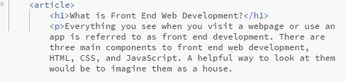
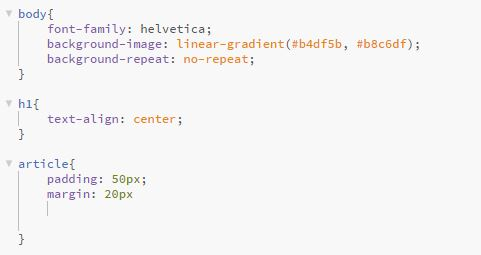

What is Front End Web Development?
Everything you see when you visit a webpage or use an app is referred to as front end development. There are three main components to front end web development, HTML, CSS, and JavaScript. A helpful way to look at them would be to imagine them as a house.
HTML stands for Hyper Text Markup Language. This is the structure and main contents of the "house". With HTML you tell the browser the basic outline and content that you want to be viewed by the user.
CSS stands for Cascading Style Sheets. This is the interior decoration of the house. CSS is the language you use to style your HTML with color, fonts, etc. The word cascade refers to how CSS will flow down your style sheet and apply the styling instructions of the latest rule on the page for that element, unless there is a rule that is more specific which would then take precedence.
JavaScript is like the electricity for the house. When you flip a switch, or click a button the lights turn on, the garage door opens, it makes the house interactive. In much the same way JavaScript makes a website interactive. It can store and calculate data and even change the webpage's appearance.

I hope this helps anyone that felt confused regarding Front End Web Development.